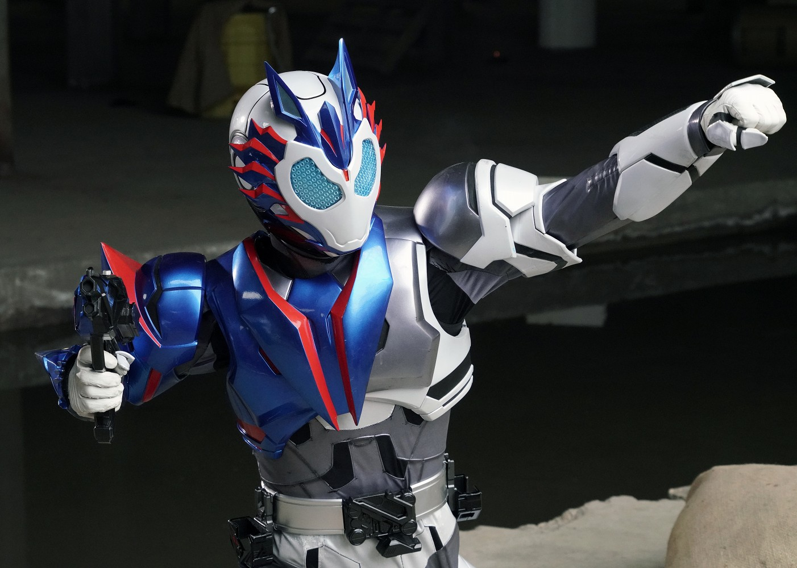
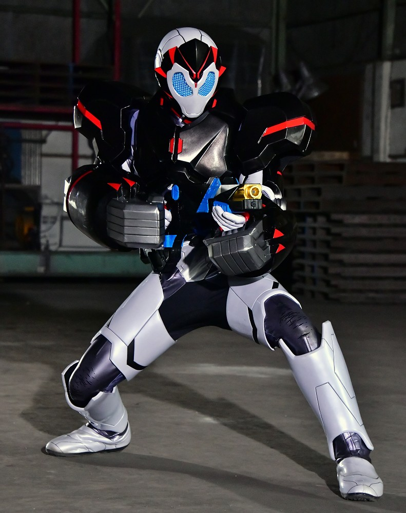
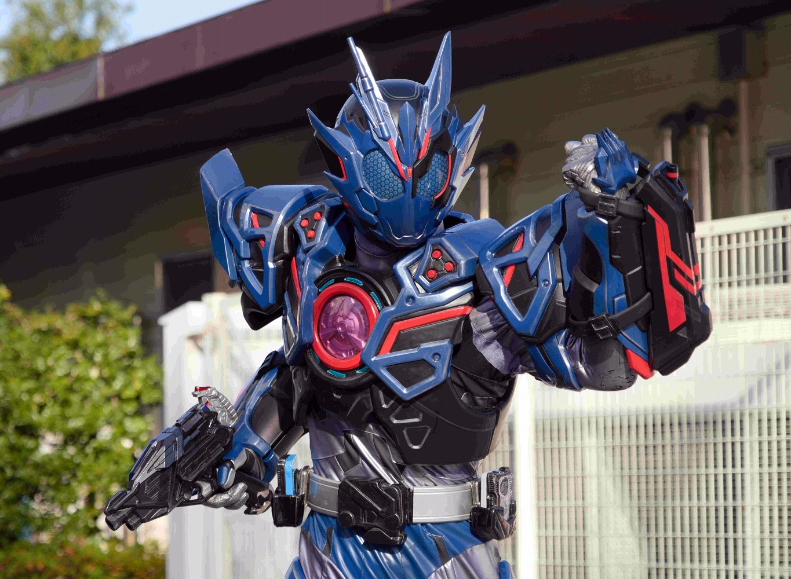
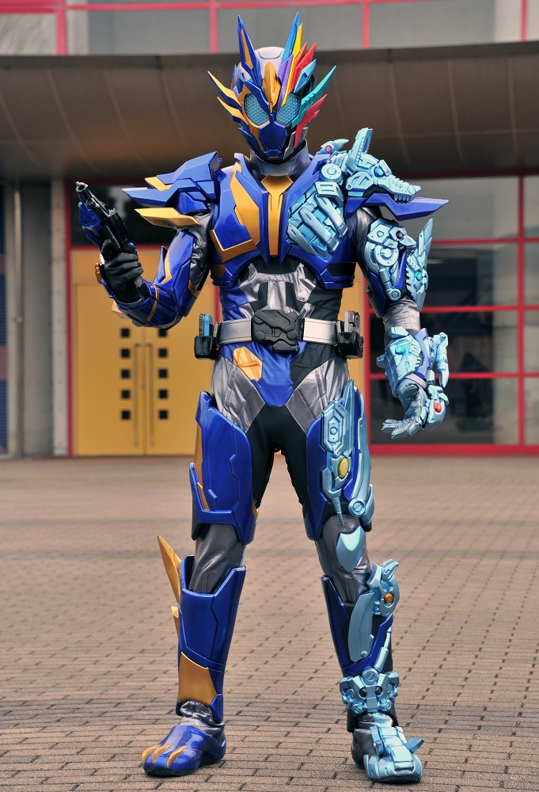
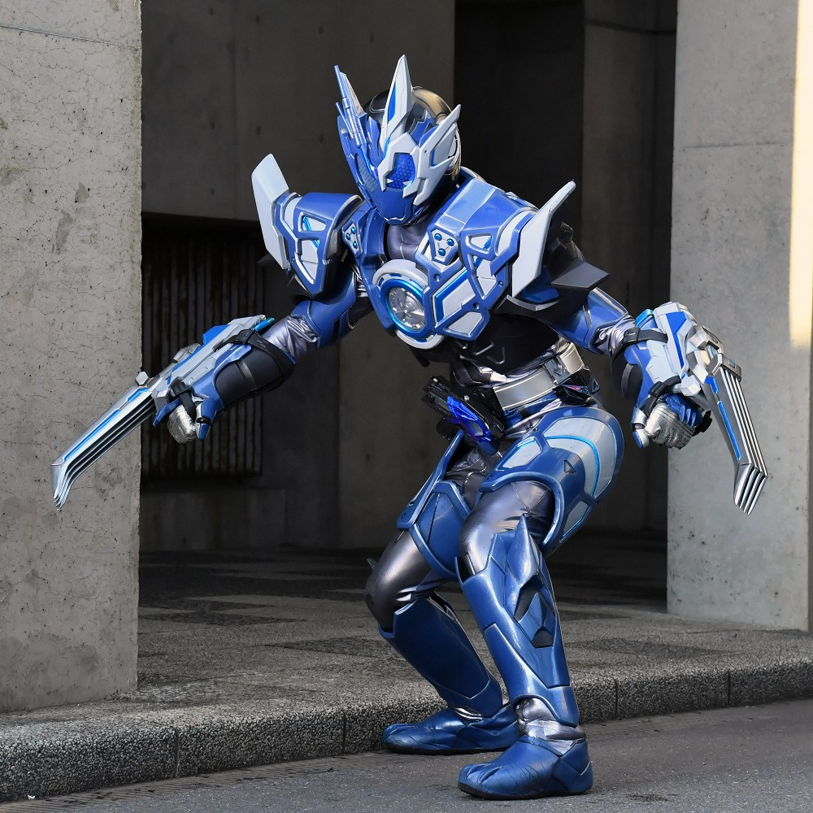

シューティングウルフ
「シューティングウルフ」プログライズキーで変身
狼の能力を備えており、射撃性能と俊敏性が向上している。
必殺技は、４発の弾丸を放ち、相手の四肢を拘束し、強力なエネルギー弾でとどめを刺す
バレットシューティングブラスト。

パンチングコング
「パンチングコング」プログライズキーで変身
ゴリラの力を備えている。
打撃、防御性能に優れており、反動の強い銃などをデメリットなしで使うことができる。
腕の装甲は射出可能。

アサルトウルフ
「アサルトウルフ」プログライズキーに「アサルトグリップ」を装着し、変身
シューティングウルフの発展強化型であり、攻撃性能が格段に上昇している。
装甲に内蔵されたマイクロミサイルやマルチロックレーザーを使い大火力での強襲作戦を得意とする。
アサルトウルフプログライズキーのみで変身することはできない。

ランペイジバルカン
「ランペイジバルカン」プログライズキーで変身
バルカンの最強形態。
１０種のプログライズキーの力を内包しており、
プログライズキーのアビリティを使ったり、アビリティ同士を掛け合わせることで、
様々な環境で優位に戦える。
超高火力の銃撃は立ちふさがるもの全てをぶっ潰す。

オルトロスバルカン
「ジャパニーズウルフ」ゼツメライズキーを使い変身
仮面ライダーバルカンの開発系譜の最終形態
バルカンの全形態と仮面ライダー亡の能力が組み込まれている。
ゼツメライズキーを使用しているため、体に負荷がかかっており、
劇中でも数分程度で変身が解除されていた。
銃だけでなく腕部に搭載されたかぎ爪を使い戦う。

ローンウルフ
「ダイアウルフ」ゼツメライズキーにアサルトグリップを装着し、変身
飛電ゼロワンドライバーを使い変身する。
本来なら社長ではないと使用することができないが、株式会社バルカンという
会社を設立し、無理やり使用可能にした。
遠距離攻撃をほとんど搭載していない代わりに、近距離での攻撃性能や
機動力が大幅に上昇している。
ここまでくるとベルトが自己申告する。